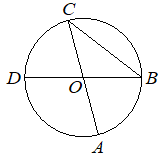

Авторский разбор и аудит предварительны; внешней экспертизы нет.
Модель автора: claude-opus-5-5 (opus; effort=low); в основных частотах: True ·
Впишите правильный ответ.
| Отрезки и диаметры окружности |  |
КЭС: 7.1 Фигуры на плоскости
98
| ID / вход | Действие | Результат | Локальные KC |
|---|---|---|---|
| s1 · condition | OC и OB — радиусы, треугольник OCB равнобедренный, значит угол OBC равен углу OCB (угол ACB, т.к. O лежит на AC) | угол OBC = 41° | kc1 |
| s2 · condition, s1 | По сумме углов треугольника OCB найти угол COB | угол COB = 180° − 2·41° = 98° | kc2 |
| s3 · condition, s2 | Угол AOD вертикален углу COB (AC и BD — прямые через O) | угол AOD = 98° | kc3 |
[
{
"id": "m1",
"name": "Равнобедренный треугольник из радиусов, сумма углов и вертикальные углы",
"step_ids": [
"s1",
"s2",
"s3"
]
}
]Вход: треугольник с вершиной в центре окружности и двумя другими вершинами на окружности. Операция: заключить равенство сторон-радиусов и равенство углов при основании. Граница: только когда обе стороны — радиусы одной окружности.
{
"local_kc_id": "kc1",
"status": "needs_split",
"catalog_kc_id": null,
"evidence": [
{
"ref": "step:s1:action",
"quote": "OC и OB — радиусы, треугольник OCB равнобедренный, значит угол OBC равен углу OCB"
},
{
"ref": "step:s1:result",
"quote": "угол OBC = 41°"
}
],
"context_refs": [
"condition",
"image:assets/8fbc93d29d86bdf668a8e012.png"
],
"alternatives_checked": [
{
"catalog_kc_id": "isosceles_angles",
"reason": "Покрывает вывод равенства углов при основании из равенства сторон, но не включает установление равенства сторон как радиусов одной окружности и отождествление угла OCB с ACB."
},
{
"catalog_kc_id": "literal_fe8297102f74",
"reason": "Равноудалённость от концов отрезка через серединный перпендикуляр — другое основание равенства длин."
}
],
"rationale": "Кандидат объединяет: (а) установление OC=OB как радиусов (центр O из условия, C и B на окружности по рисунку) и (б) равенство углов при основании равнобедренного треугольника. Часть (б) полностью соответствует isosceles_angles; для части (а) узла в каталоге нет. Отождествление угла OCB с ACB опирается на то, что O лежит на диаметре AC (условие).",
"proposal": {
"parts": [
{
"part": "Установить равенство отрезков как радиусов одной окружности (центр и точки на окружности)",
"possible_catalog_kc_id": null
},
{
"part": "Из равенства сторон вывести равенство углов при основании",
"possible_catalog_kc_id": "isosceles_angles"
}
]
},
"blocking": false,
"issue_ids": []
}Вход: два известных угла треугольника. Операция: вычесть их сумму из 180°. Граница: евклидов треугольник.
{
"local_kc_id": "kc2",
"status": "match",
"catalog_kc_id": "literal_f5a787e19d0e",
"evidence": [
{
"ref": "step:s2:action",
"quote": "По сумме углов треугольника OCB найти угол COB"
},
{
"ref": "step:s2:result",
"quote": "угол COB = 180° − 2·41° = 98°"
}
],
"context_refs": [
"step:s1:result",
"condition"
],
"alternatives_checked": [
{
"catalog_kc_id": "isosceles_angles",
"reason": "Включает выражение угла при вершине, но здесь известны оба угла при основании из s1/условия; действие — именно сумма углов треугольника."
},
{
"catalog_kc_id": "literal_adbf18f11761",
"reason": "Сложение/вычитание углов с общей стороной, не сумма углов треугольника."
}
],
"rationale": "Наблюдаемое действие — нахождение третьего угла треугольника OCB по сумме углов 180° при двух известных (41° из условия, 41° из s1). Определение узла упоминает сумму углов и смежность; смежность здесь не используется, но кандидат является прямым применением части 'сумма углов треугольника' без иного узла с более узкой формулировкой.",
"proposal": null,
"blocking": false,
"issue_ids": []
}Вход: угол, образованный двумя пересекающимися прямыми. Операция: перенести его величину на вертикальный угол. Граница: стороны углов лежат на двух пересекающихся прямых.
{
"local_kc_id": "kc3",
"status": "new_candidate",
"catalog_kc_id": null,
"evidence": [
{
"ref": "step:s3:action",
"quote": "Угол AOD вертикален углу COB (AC и BD — прямые через O)"
},
{
"ref": "step:s3:result",
"quote": "угол AOD = 98°"
},
{
"ref": "image:assets/8fbc93d29d86bdf668a8e012.png",
"region_description": "Хорды CA и DB проходят через центр O и пересекаются в нём; лучи OC и OA противоположны, OB и OD противоположны, угол COB (вверху справа) и угол AOD (внизу слева) расположены вертикально."
}
],
"context_refs": [
"condition",
"step:s2:result"
],
"alternatives_checked": [
{
"catalog_kc_id": "literal_f5a787e19d0e",
"reason": "Смежность углов — близко (вертикальность выводима через двойную смежность), но равенство вертикальных углов как отдельное действие в определении не названо."
},
{
"catalog_kc_id": "literal_adbf18f11761",
"reason": "Сложение/вычитание углов с общей стороной; у вертикальных углов общей стороны нет."
}
],
"rationale": "Операция — перенос величины угла на вертикальный ему угол при пересечении двух прямых (AC и BD — диаметры, пересекаются в O). В каталоге нет узла о вертикальных углах.",
"proposal": {
"name": "Применять равенство вертикальных углов",
"definition": "Для двух прямых, пересекающихся в точке, установить, что углы, стороны которых являются продолжениями сторон друг друга, равны, и перенести известную величину одного на другой."
},
"blocking": false,
"issue_ids": []
}[]
[]
{
"author_path": "data/annotation/runs/2026-11-09-fipi-team-bogdan108-next-100/raw/author/80A34C.json",
"auditor_path": "data/annotation/runs/2026-11-09-fipi-team-bogdan108-next-100/raw/auditor/80A34C.json",
"accepted_after_review": null
}